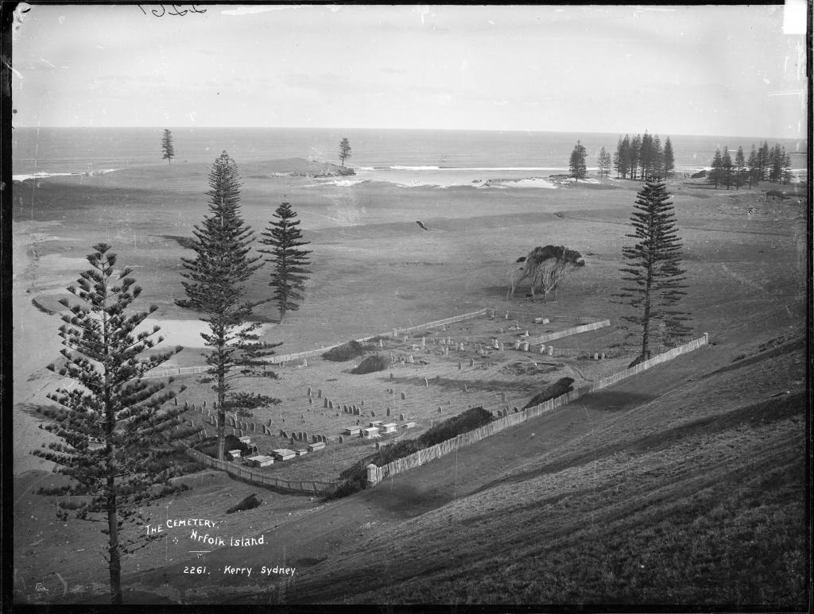
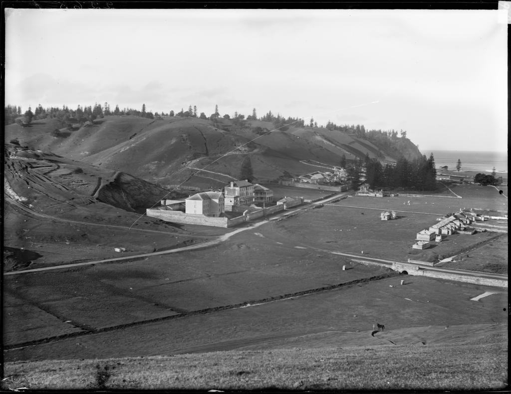

Norfolk Island Introduction
Content 1
The Kingston and Arthurs vale Historic Area (KAvHA) is of outstanding signifcance to the nation as a convict settlement spanning the era of transportation to eastern Australia between 1788 and 1855. Europeans were not the first people to inhabit Norfolk island. Stone tools found at both Emily and Slaughter Bays within KAvHA indicate that Polynesian settlement of the area occurred between AD 1200 and AD 1600. visited by Captain James Cook RN in 1774, Norfolk island was settled on 6 March 1788, six weeks after the First Fleet landed in Sydney. A settlement was established at Kingston, with crops sown in the adjoining valley, Arthurs vale. To relieve the food pressures in the infant colony of New South Wales, Governor Philip relocated around one-third of Sydney’s population to Kingston. Both convicts and free settlers farmed small holdings of land. The rest settlement’s population peaked at 1156 in May 1792. By 1804, the free settlers on the island signifcantly outnumbered the convicts who represented 23 per cent of the total population of 1084. Abandoned in 1814, the settlement’s buildings were destroyed. in 1825, the island was re-occupied to provide secondary punishment of convicts. Secondary punishment was designed to revive the fear of transportation and deter crime in Britain and the colonies. it was a sentence applied to transported convicts who re-offended in the colony.
Content 2
The Sirius wreck (1790) remains on the seabed off the reef in Slaughter Bay. The first anchor raised was in 1903. Artefacts have been recovered from the wreck, some of which form part of the collection housed in the Norfolk Island Museum. The artefact collection, in combination with a detailed written record, has outstanding research potential for information about the lives of the bond and free in the early convict period. Other relics, including two of the Sirius anchors are on the mainland. The large anchor is displayed in Macquarie Place, Sydney and another is in the Maritime Museum in Sydney.

Content 3
The place is rich in aesthetic qualities due to the combination of spatial structure, visual quality and the strong relationship between built elements and their setting. Apart from visual quality, the places is a rich source of other sensory stimuli; the sounds, tastes and textures are all products of the friction wrought between such natural elements as wind, water and sun. Oceanic influences render the natural lighting of the place very changeable over a day, and dramatise the scene. The combination of cultural expression, natural forces and their resultant patterns enable a perception and interpretation of the place as a 'picturesque' and 'romantic' landscape made up of a number of elements including natural/built edges, sea/landscape vistas, gardens, rural pastures, cleared hills and formal plantings (Australian Construction Services, 1994).
